% Defining the tire and nonlinear vehicle models with the default parameters % TirePlant = TirePacejka; VehiclePlant = VehicleSimpleNonlinear; VehiclePlant.tire = TirePlant;
Maneuver
This section presents the vehicle maneuver to be estimated by the Kalman Filter.
Choosing simulation parameters:
T = 6; % Total simulation time [s] resol = 50; % Resolution TSPAN = 0:T/resol:T; % Time span [s]
Initializing the simulator and simulating.
simulatorPlant = Simulator(VehiclePlant, TSPAN); simulatorPlant.dPSI0 = 0.35; simulatorPlant.Simulate
Retrieving state responses
XTPlant = simulatorPlant.XT; YTPlant = simulatorPlant.YT; PSIPlant = simulatorPlant.PSI; vTPlant = simulatorPlant.VEL; ALPHATPlant = simulatorPlant.ALPHAT; dPSIPlant = simulatorPlant.dPSI; XOUTPlant = [XTPlant YTPlant PSIPlant vTPlant ALPHATPlant dPSIPlant];
Generating the graphics of the maneuver.
gPlant = Graphics(simulatorPlant);
gPlant.TractorColor = 'r';
gPlant.Frame();Kalman Filter Model
Initializing the tire model
TireModel = TireLinear;
Choosing model vehicle
VehicleModel = VehicleSimpleNonlinear; VehicleModel.tire = TireModel;
Simulating with the same time span.
simulatorModel = Simulator(VehicleModel, TSPAN); simulatorModel.dPSI0 = 0.35; simulatorModel.Simulate;
Retrieving states
XTModel = simulatorModel.XT; YTModel = simulatorModel.YT; PSIModel = simulatorModel.PSI; vTModel = simulatorModel.VEL; ALPHATModel = simulatorModel.ALPHAT; dPSIModel = simulatorModel.dPSI;
The maneuver generated by the simplified model (with the same initial conditions) is illustrated below
gModel = Graphics(simulatorModel);
gModel.TractorColor = 'g';
gModel.Frame();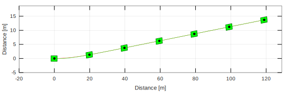Plant and model comparison
Comparing tire models
g = 9.81; FzF = VehiclePlant.mF0*g; FzR = VehiclePlant.mR0*g; muy = VehiclePlant.muy; nF = VehiclePlant.nF; nR = VehiclePlant.nR; alpha= 0:0.5:15; alpha = alpha*pi/180; FyLin = - TireModel.Characteristic(alpha); FyFPac = - TirePlant.Characteristic(alpha, FzF, muy); FyRPac = - TirePlant.Characteristic(alpha, FzR, muy); figure ax = gca; set(ax,'NextPlot','add','Box','on','XGrid','on','YGrid','on') plot(alpha(1:floor(end/2))*180/pi,FyLin(1:floor(end/2)),'r') plot(alpha*180/pi,FyFPac,'g') plot(alpha*180/pi,FyRPac,'g--') xlabel('alpha [deg]') ylabel('Fy [N]') l = legend('Linear','Pacejka F','Pacejka R'); set(l,'Location','SouthEast')
Comparing state response
f1 = figure; ax = gca; set(ax,'NextPlot','add','Box','on','XGrid','on','YGrid','on') plot(TSPAN,XTPlant,'r') plot(TSPAN,XTModel,'r--') legend('Plant','Model') xlabel('Time [s]') ylabel('Distance X [m]') f2 = figure; ax = gca; set(ax,'NextPlot','add','Box','on','XGrid','on','YGrid','on') plot(TSPAN,YTPlant,'g') plot(TSPAN,YTModel,'g--') legend('Plant','Model') xlabel('Time [s]') ylabel('Distance Y [m]') f3 = figure; ax = gca; set(ax,'NextPlot','add','Box','on','XGrid','on','YGrid','on') plot(TSPAN,PSIPlant,'b') plot(TSPAN,PSIModel,'b--') legend('Plant','Model') xlabel('Time [s]') ylabel('PSI [rad]') f4 = figure; ax = gca; set(ax,'NextPlot','add','Box','on','XGrid','on','YGrid','on') plot(TSPAN,vTPlant,'c') plot(TSPAN,vTModel,'c--') legend('Plant','Model') xlabel('Time [s]') ylabel('vT [m/s]') f5 = figure; ax = gca; set(ax,'NextPlot','add','Box','on','XGrid','on','YGrid','on') plot(TSPAN,ALPHATPlant,'m'), plot(TSPAN,ALPHATModel,'m--'), legend('Plant','Model') xlabel('Time [s]') ylabel('ALPHAT [rad/s]') f6 = figure; ax = gca; set(ax,'NextPlot','add','Box','on','XGrid','on','YGrid','on') plot(TSPAN,dPSIPlant,'k') plot(TSPAN,dPSIModel,'k--') legend('Plant','Model') xlabel('Time [s]') ylabel('dPSI [rad/s]')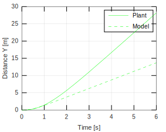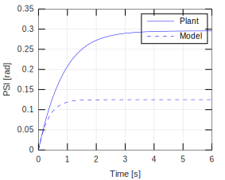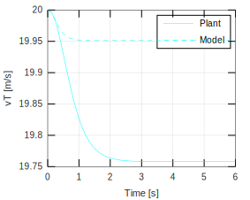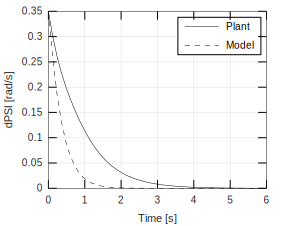
Comparing longitudinal and lateral acceleration
saidasPlant = [XTPlant YTPlant PSIPlant vTPlant ALPHATPlant dPSIPlant]; matDerivEstadosPlant = zeros(size(saidasPlant)); for i = 1:size(saidasPlant,1) auxil = simulatorPlant.Vehicle.Model(1,saidasPlant(i,:),TSPAN); matDerivEstadosPlant(i,:) = auxil'; end dXTPlant = matDerivEstadosPlant(:,1); dYTPlant = matDerivEstadosPlant(:,2); dPSIPlant = matDerivEstadosPlant(:,3); dvTPlant = matDerivEstadosPlant(:,4); dALPHATPlant = matDerivEstadosPlant(:,5); ddPSIPlant = matDerivEstadosPlant(:,6); ddXPlant = dvTPlant.*cos(PSIPlant + ALPHATPlant) - vTPlant.*(dPSIPlant + dALPHATPlant).*sin(PSIPlant + ALPHATPlant); ddYPlant = dvTPlant.*sin(PSIPlant + ALPHATPlant) + vTPlant.*(dPSIPlant + dALPHATPlant).*cos(PSIPlant + ALPHATPlant); ACELNumPlant = [(ddXPlant.*cos(PSIPlant) - ddYPlant.*sin(PSIPlant)) (-ddXPlant.*sin(PSIPlant) + ddYPlant.*cos(PSIPlant))]; saidasModel = [XTModel YTModel PSIModel vTModel ALPHATModel dPSIModel]; matDerivEstadosModel = zeros(size(saidasModel)); for i = 1:size(saidasModel,1) auxil = simulatorModel.Vehicle.Model(1,saidasModel(i,:),TSPAN); matDerivEstadosModel(i,:) = auxil'; end dXTModel = matDerivEstadosModel(:,1); dYTModel = matDerivEstadosModel(:,2); dPSIModel = matDerivEstadosModel(:,3); dvTModel = matDerivEstadosModel(:,4); dALPHATModel = matDerivEstadosModel(:,5); ddPSIModel = matDerivEstadosModel(:,6); ddXModel = dvTModel.*cos(PSIModel + ALPHATModel) - vTModel.*(dPSIModel + dALPHATModel).*sin(PSIModel + ALPHATModel); ddYModel = dvTModel.*sin(PSIModel + ALPHATModel) + vTModel.*(dPSIModel + dALPHATModel).*cos(PSIModel + ALPHATModel); ACELNumModel = [(ddXModel.*cos(PSIModel) - ddYModel.*sin(PSIModel)) (-ddXModel.*sin(PSIModel) + ddYModel.*cos(PSIModel))]; f7 = figure; ax = gca; set(ax,'NextPlot','add','Box','on','XGrid','on','YGrid','on') plot(TSPAN,ACELNumPlant(:,1),'r') plot(TSPAN,ACELNumPlant(:,2),'g') plot(TSPAN,ACELNumModel(:,1),'r--') plot(TSPAN,ACELNumModel(:,2),'g--') xlabel('time [s]') ylabel('acc. [m/s]') l = legend('AX Plant','AY Plant','AX Model','AY Model'); set(l,'Location','NorthEast')
Comparing the maneuvers of the plant and the model.
set(gcf,'nextplot','replace') gPlant.Frame(); hold on gModel.Frame();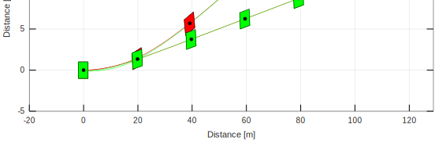
Model linearization
The general expression of the linearized model is optained using the symbolic processor of Octave/Matlab.
Defining symbols
syms XT YT PSI vT ALPHAT dPSI mT IT a b K
Slip angles
ALPHAF = atan((vT * sin(ALPHAT) + a * dPSI)/(vT * cos(ALPHAT))); % Dianteiro ALPHAR = atan((vT * sin(ALPHAT) - b * dPSI)/(vT * cos(ALPHAT))); % Traseiro
Lateral forces
FyF = -K*ALPHAF; FyR = -K*ALPHAR;
State equations
f1e = vT * cos(ALPHAT + PSI); f2e = vT * sin(ALPHAT + PSI); f3e = dPSI; f4e = (FyF * sin(ALPHAT) + FyR * sin(ALPHAT))/(mT); f5e = (FyF * cos(ALPHAT) + FyR * cos(ALPHAT) - mT * vT * dPSI) / (mT * vT); f6e = (FyF * a - FyR * b) / IT; f = [f1e ; f2e ; f3e ; f4e ; f5e ; f6e];
State vector
States = [XT ; YT ; PSI ; vT ; ALPHAT ; dPSI];
The linearized system is written as
$$ \dot{\bf x} = {\bf F} {\bf x} $$
where ${\bf F}$ is the dynamic matrix of the linear model obtained after the truncation of the expansion of the Taylor series. Thus, the ${\bf F}$ matrix is
$$ {\bf F} = \left[ \frac{\partial f_i}{\partial x_j} \right]_{n \times n} $$
where $i$ e $j$ indicate the equations and state variables used in the calculations of at the position $(i,j)$ of the jacobian matrix.
Calculating the jacobian matrix.
F = jacobian(f,States); F = simplify(F);
Defining a matlab function to retrieve the numerical value of F. This way is faster than using "subs".
Ffunc = matlabFunction(F,'Vars',{PSI vT ALPHAT dPSI mT IT a b K});Measurements
Hypothetically, the measured quantities are:
For this, we use:
$$ \dot{x} = v_{\rm T} \cos \left( \psi + \alpha_{\rm T} \right) $$
$$ \dot{y} = v_{\rm T} \sin \left( \psi + \alpha_{\rm T} \right) $$
Longitudinal and lateral acceleration are
$$ \ddot{x} = \dot{v}_{\rm T} \cos \left( \psi + \alpha_{\rm T} \right) - v_{\rm T} \left( \dot{\psi} + \dot{\alpha}_{\rm T} \right) \sin \left( \psi + \alpha_{\rm T} \right) $$
$$ \ddot{y} = \dot{v}_{\rm T} \sin \left( \psi + \alpha_{\rm T} \right) + v_{\rm T} \left( \dot{\psi} + \dot{\alpha}_{\rm T} \right) \cos \left( \psi + \alpha_{\rm T} \right) $$
Thus
ddX = f4*cos(PSI + ALPHAT) - vT*(dPSI + f5)*sin(PSI + ALPHAT); ddY = f4*sin(PSI + ALPHAT) + vT*(dPSI + f5)*cos(PSI + ALPHAT);
The equations above describe the dynamics from $ \{ O {\bf i} {\bf j} {\bf k} \} $. In the moving reference frame $ \{ O {\bf t}_x {\bf t}_y {\bf t}_z \} $ the equations are
$$ {\bf a} = \left( \ddot{x} \cos \psi - \ddot{y} \sin \psi \right) {\bf t}_x + \left( - \ddot{x} \sin \psi + \ddot{y} \sin \psi \right) {\bf t}_y $$
Thus,
ACEL = [ddX*cos(PSI) - ddY*sin(PSI) ; -ddX*sin(PSI) + ddY*cos(PSI)]; ACEL = simplify(ACEL);
The nonlinear observation equation is given by
$$ {\bf z}_k = {\bf h} ({\bf x}_k) + {\bf v}_k $$
with $ {\bf v}_k $ ~ $ N ( {\bf 0} , {\bf R}_k ) $.
The linear version is given by
$$ {\bf z}_k = {\bf H} {\bf x}_k + {\bf v}_k $$
where
$$ {\bf H} = \left[ \frac{\partial h_i}{\partial x_j} \right]_{m \times n} $$
that is, the output matrix {\bf H} is the jacobian matrix of the ACEL equation in relation to the system states.
medNonlinear = [XT ; YT ; f6 ; ACEL]; H = jacobian(medNonlinear,States); H = simplify(H);
Again, defining matlab functions to retrieve the numerical value of medNonlinearfunc and H.
medNonlinearfunc = matlabFunction(medNonlinear,'Vars',{XT YT PSI vT ALPHAT dPSI mT IT a b K}); Hfunc = matlabFunction(H,'Vars',{PSI vT ALPHAT dPSI mT IT a b K});
Extended Kalman Filter
Implementing the algorithm
Noise matrix
G = eye(6); % Matriz identidade (6 x 6)
Covariance matrices
Q = eye(6); R = eye(5);
Matrix
P0 = eye(6);
Retrieving the initial conditions defined above.
X0Num = simulatorModel.X0; Y0Num = simulatorModel.Y0; PSI0Num = simulatorModel.PSI0; VEL0Num = simulatorModel.V0; ALPHAT0Num = simulatorModel.ALPHAT0; dPSI0Num = simulatorModel.dPSI0; x0 = [ X0Num ; Y0Num ; PSI0Num ; VEL0Num ; ALPHAT0Num ; dPSI0Num ]; x0 = zeros(6,1); x0(4)=20;
Retrieving the vehicle parameters.
mTNum = VehicleModel.mT; ITNum = VehicleModel.IT; aNum = VehicleModel.a; bNum = VehicleModel.b; KNum = TireModel.k; parameters = [mTNum ITNum aNum bNum KNum];
Sample time
sampleTime = 0.1;
t = 0:sampleTime:T; % Array of observation instants
Preallocation
XOUTopt = zeros(length(t) + 1,length(States)); % Estimate of the states after update Popt = zeros(length(t) + 1,1); % Covariance matrix after update Pantes = zeros(length(t) + 1,1); % Covariance matrix before update KKalmanopt = ones(length(t) + 1,1); % Kalman gain
Using the first values
XOUTopt(1,:) = x0'; XOUTantes(1,:) = x0'; Pantes(1,1) = norm(P0); Popt(1,1) = norm(P0); % Error distribution pesos = [5; 5; 0.1; 0.5; 0.5];
Iterations
for j = 1:length(t) % Index varying through all instants of observation % Time span for the propagation phase tspan = t(j):sampleTime/100:t(j)+sampleTime; % Measures of the interation z = [interp1(TSPAN,XTPlant(:,1),t(j)) ; interp1(TSPAN,YTPlant(:,1),t(j)) ; interp1(TSPAN,ddPSIPlant(:,1),t(j)) ; interp1(TSPAN,ACELNumPlant(:,1),t(j)) ; interp1(TSPAN,ACELNumPlant(:,2),t(j))]; z = z + pesos.*(rand(5,1)-0.5); Fnum = Ffunc(PSI0Num,VEL0Num,ALPHAT0Num,dPSI0Num,mTNum,ITNum,aNum,bNum,KNum); Hnum = Hfunc(PSI0Num,VEL0Num,ALPHAT0Num,dPSI0Num,mTNum,ITNum,aNum,bNum,KNum); % Propagation cycle % Transforming matrix PMat0 (6 x 6) in P0 (1 x 36) P0 = reshape(P0',[1 36]); [TOUT,Pout] = ode45(@(t,P) IntCov(t,P,Fnum,G,Q),tspan,P0); Pmatrix = reshape(Pout(end,:),[6 6])'; simulatorKalman = Simulator(VehicleModel, tspan); % Initial conditions simulatorKalman.X0 = x0(1); simulatorKalman.Y0 = x0(2); simulatorKalman.PSI0 = x0(3); simulatorKalman.V0 = x0(4); simulatorKalman.ALPHAT0 = x0(5); simulatorKalman.dPSI0 = x0(6); % Simulation simulatorKalman.Simulate() XTKalman = simulatorKalman.XT; YTKalman = simulatorKalman.YT; PSIKalman = simulatorKalman.PSI; vTKalman = simulatorKalman.VEL; ALPHATKalman = simulatorKalman.ALPHAT; dPSIKalman = simulatorKalman.dPSI; XOUTKalman = [XTKalman YTKalman PSIKalman vTKalman ALPHATKalman dPSIKalman]; % Update cycle ACELKalman = medNonlinearfunc(XTKalman(end), YTKalman(end), PSIKalman(end), vTKalman(end), ALPHATKalman(end), dPSIKalman(end), mTNum, ITNum, aNum, bNum, KNum); KKalman = Pmatrix*Hnum' / (Hnum*Pmatrix*Hnum' + R); XKalman = XOUTKalman(end,:)' + KKalman*(z - ACELKalman); PKalman = Pmatrix - KKalman*Hnum*Pmatrix; x0 = XKalman; P0 = PKalman; XOUTopt(j+1,:) = XKalman'; XOUTantes(j+1,:) = XOUTKalman(end,:); Popt(j+1) = norm(PKalman); Pantes(j+1) = norm(Pmatrix); KKalmanopt(j+1) = norm(KKalman); end
Comparison
f8 = figure; ax = gca; set(ax,'NextPlot','add','Box','on','XGrid','on','YGrid','on') plot(TSPAN,XOUTPlant(:,1),'r') p = plot(t(2:end),XOUTopt(2:end-1,1),'r--'); set(p,'Marker','*','MarkerSize',3) l = legend('Plant','Estim'); set(l,'Location','SouthEast') xlabel('tempo [s]') ylabel('x [m]') f9 = figure; ax = gca; set(ax,'NextPlot','add','Box','on','XGrid','on','YGrid','on') plot(TSPAN,XOUTPlant(:,2),'g') p = plot(t(2:end),XOUTopt(2:end-1,2),'g--'); set(p,'Marker','*','MarkerSize',3) l = legend('Plant','Estim'); set(l,'Location','SouthEast') xlabel('tempo [s]') ylabel('y [m]') f10 = figure; ax = gca; set(ax,'NextPlot','add','Box','on','XGrid','on','YGrid','on') plot(TSPAN,XOUTPlant(:,3),'b') p = plot(t(2:end),XOUTopt(2:end-1,3),'b--'); set(p,'Marker','*','MarkerSize',3) l = legend('Plant','Estim'); set(l,'Location','SouthEast') xlabel('tempo [s]') ylabel('PSI [rad]') f11 = figure; ax = gca; set(ax,'NextPlot','add','Box','on','XGrid','on','YGrid','on') plot(TSPAN,XOUTPlant(:,4),'c') p = plot(t(2:end),XOUTopt(2:end-1,4),'c--'); set(p,'Marker','*','MarkerSize',3) l = legend('Plant','Estim'); set(l,'Location','SouthEast') xlabel('tempo [s]') ylabel('vT [m/s]') f12 = figure; ax = gca; set(ax,'NextPlot','add','Box','on','XGrid','on','YGrid','on') plot(TSPAN,XOUTPlant(:,5),'m') p = plot(t(2:end),XOUTopt(2:end-1,5),'m--'); set(p,'Marker','*','MarkerSize',3) l = legend('Plant','Estim'); set(l,'Location','SouthEast') xlabel('tempo [s]') ylabel('ALPHAT [rad/s]') f13 = figure; ax = gca; set(ax,'NextPlot','add','Box','on','XGrid','on','YGrid','on') plot(TSPAN,XOUTPlant(:,6),'k') p = plot(t(2:end),XOUTopt(2:end-1,6),'k--'); set(p,'Marker','*','MarkerSize',3) l = legend('Plant','Estim'); set(l,'Location','SouthEast') xlabel('tempo [s]') ylabel('dPSI [rad/s]') % Cov. do erro f14 = figure; ax = gca; set(ax,'NextPlot','add','Box','on','XGrid','on','YGrid','on') p = plot(t(2:end),KKalmanopt(2:end-1),'r'); set(p,'Marker','*','MarkerSize',3) ylabel('ganho de kalman') xlabel('tempo [s]') f15 = figure; ax = gca; set(ax,'NextPlot','add','Box','on','XGrid','on','YGrid','on') p = plot(t(2:end),Popt(2:end-1),'r'); set(p,'Marker','*','MarkerSize',3) p = plot(t(2:end),Pantes(2:end-1),'g'); set(p,'Marker','*','MarkerSize',3) l = legend('+','-'); set(l,'Location','NorthEast') ylabel('cov. erro') xlabel('tempo [s]')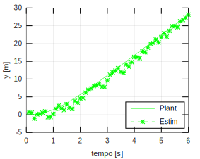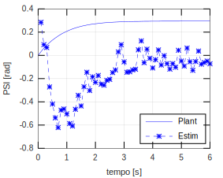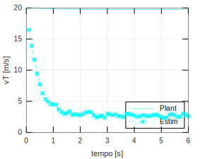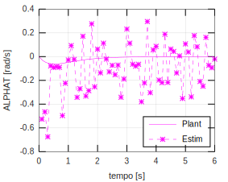
Estimated trajectory
Using simulatorPlant to initialize the Kalman frame.
set(gcf,'nextplot','replace') gKalman = Graphics(simulatorKalman); gKalman.Simulator.TSpan = t; gKalman.Simulator.XT = XOUTopt(1:end-1,1); gKalman.Simulator.YT = XOUTopt(1:end-1,2); gKalman.Simulator.PSI = XOUTopt(1:end-1,3); gKalman.Simulator.VEL = XOUTopt(1:end-1,4); gKalman.Simulator.ALPHAT = XOUTopt(1:end-1,5); gKalman.Simulator.dPSI = XOUTopt(1:end-1,6); gKalman.TractorColor = 'b'; set(gcf,'nextplot','replace') gPlant.Frame(); hold on gKalman.Frame();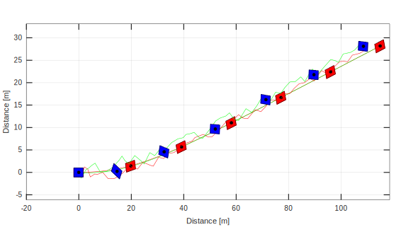